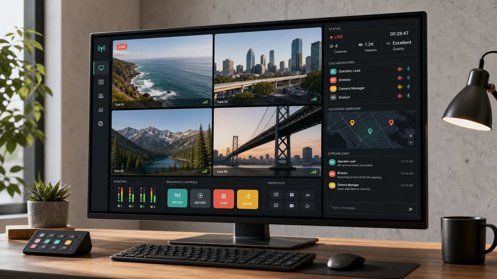

Live view command
Pin, group, and prioritize feeds so teams can follow what matters without losing context.

Live video operations for teams in motion
Broadcast every critical view, monitor signal health, and give the right people a shared operating picture without burying them in feeds.
Platform
ViewCast turns scattered video streams into a coordinated workspace for producers, operations teams, and stakeholders watching from anywhere.
Pin, group, and prioritize feeds so teams can follow what matters without losing context.
Track source quality, latency, battery, and location health before issues reach the broadcast.
Invite executives, clients, or field teams into curated viewing spaces with the right permissions.
Views
Switch between operating modes without opening another tool. Each ViewCast space keeps video, chat, locations, and controls in one clear place.
Give directors a fast switching surface with source notes, stream health, and share controls in reach.
Workflow
Get started
Tell us what you need to monitor and we will map a live-view workspace around your sources, roles, and sharing rules.